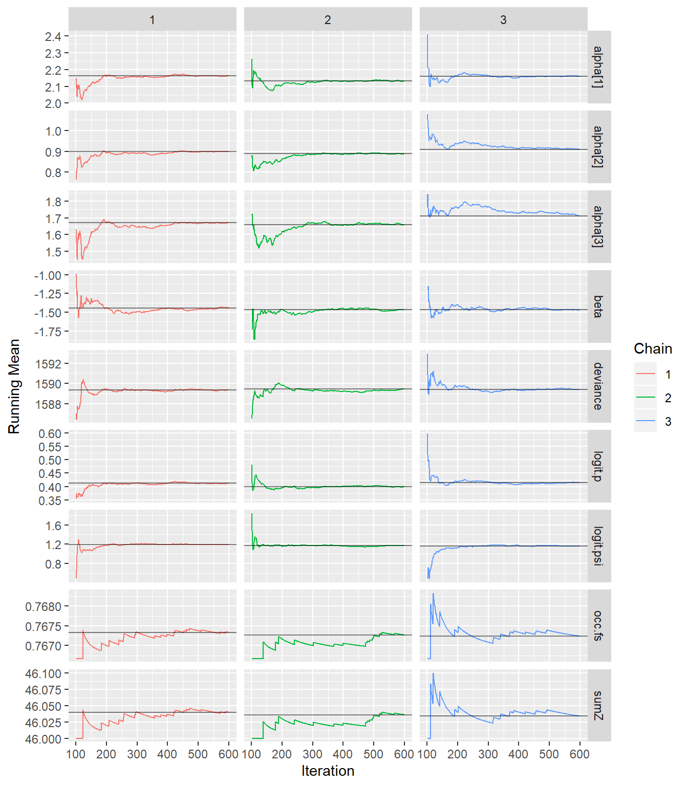
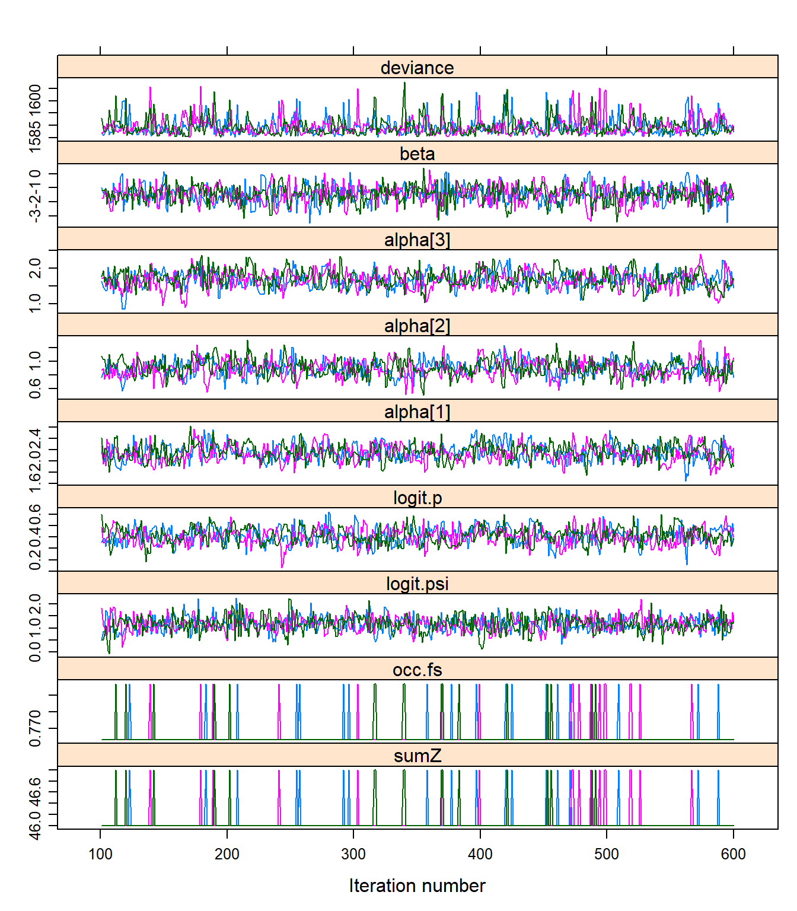
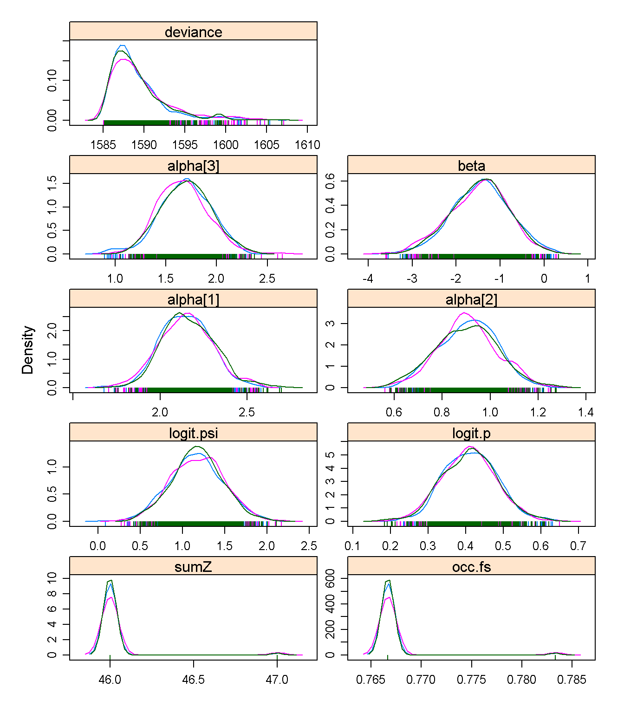

Capítulo 8 Análisis Bayesiano
En esta parte vamos a estimar los mismos parámetros de un modelo igual al “mejor modelo” el cual fue seleccionado en el procedimiento de selección de modelos de unmarked en el capitulo anterior. Recordemos que este modelo tiene beta1 y alpha1, alpha2, alpha3. Los parámetros que estimaremos con el método Bayesiano los vamos a comparar con los parámetros que ya estimamos con ML en unmarked y también los compararemos con los parámetros reales que definimos al establecer los datos (datos2) con la función data.fn, para ver cual de los dos métodos de estimación (ML o Bayesiano) se acerca más a los parámetros reales.
8.1 Generando los datos
De nuevo usaremos un diseño tipo TEAM (http://www.teamnetwork.org) con 60 sitios de muestreo y 30 visitas repetidas, que equivalen a los 30 días en que las camaras permenecen activas en campo. Nuestra especie sigue siendo la misma, el venado de cola blanca. Para este ejemplo asumiremos que la detección es 0.6, la ocupacion 0.8 y las interacciones son sencillas con la altitud como la unica covariable que explica la ocupación. Pero para la deteccion hay una relación más compleja, asumiendo que hay una leve interacción entre las covariables de la observación. Para la observación la altitud y temperatura interactuan entre si. Tambien observe como la altitud influye en direcciones opuestas con un signo positivo en la altitud para la detección y negativo para la ocupación.
# ### Generate a new data set or use the same
# # ****************************************
# set.seed(148)
# data <- data.fn(show.plot = T) # Default arguments
# str(data) # Look at the object
# we are oing to use the data from datos2 object
### Fit same model with JAGS, using library jagsUI
# ************************************************
# Bundle data
win.data <- list(y = datos2$y,
M = nrow(datos2$y),
J = ncol(datos2$y),
elev = datos2$elev,
forest = datos2$forest,
temp = datos2$temp)
# str(win.data)
# # Specify model in BUGS language
# sink("model22.txt")
# cat("
# model {
#
# # Priors
# mean.p ~ dunif(0, 1) # Detection intercept on prob. scale
# alpha0 <- logit(mean.p) # same on logit scale
# mean.psi ~ dunif(0, 1) # Occupancy intercept on prob. scale
# beta0 <- logit(mean.psi) # same on logit scale
# for(k in 1:3){ # 2 detection covariates + 1 interact
# alpha[k] ~ dnorm(0, 0.01) # Covariates on logit(detection)
# # alpha[k] ~ dnorm(0, 0.05) # Covariates on logit(detection)
# # alpha[k] ~ dunif(-10, 10) # Covariates on logit(detection)
# }
#
# for(k in 1:1){ # 2 occupancy covariates + 1 interact
# beta[k] ~ dnorm(0, 0.01) # Covariates on logit(occupancy)
# # beta[k] ~ dnorm(0, 0.05) # Covariates on logit(occupancy)
# # beta[k] ~ dunif(-10, 10) # Covariates on logit(occupancy)
# }
#
# # Translation of the occupancy parameters in unmarked into those for BUGS:
# # (Intercept) (beta0 in BUGS)
# # elev (beta[1])
# # forest (beta[2])
# # temp (beta[3])
# # elev:forest (beta[4])
# # elev:temp (beta[5])
# # forest:temp (beta[6])
# # elev:forest:temp (beta[7])
#
#
# # Likelihood
# for (i in 1:M) {
# # True state model for the partially observed true state
# z[i] ~ dbern(psi[i]) # True occupancy z at site i
# logit(psi[i]) <- beta0 + # occupancy (psi) intercept
# beta[1] * elev[i] #+ # elev
# #beta[2] * forest[i] #+ # forest
# #beta[3] * elev[i] * forest[i] # elev:forest
# #beta[4] * elev[i] * temp[i] + # elev:temp
# #beta[5] * temp[i] + # temp
# #beta[6] * forest[i] * temp[i] + # forest:temp
# #beta[7] * elev[i] * forest[i] * temp[i] # elev:forest:temp
#
# for (j in 1:J) {
# # Observation model for the actual observations
# y[i,j] ~ dbern(p.eff[i,j]) # Detection-nondetection at i and j
# p.eff[i,j] <- z[i] * p[i,j]
# logit(p[i,j]) <- alpha0 + # detection (p) intercept
# alpha[1] * elev[i] + # effect of elevation on p
# alpha[2] * temp[i,j] + # effect of temp on p
# alpha[3] * elev[i] * temp[i,j] # effect of elev:temp on p
# }
# }
#
# # Derived quantities
# sumZ <- sum(z[]) # Number of occupied sites among those studied
# occ.fs <- sum(z[])/M # proportion of occupied sites among those studied
# logit.psi <- beta0 # For comparison with unmarked
# logit.p <- alpha0 # For comparison with unmarked
# }
# ",fill = TRUE)
# sink()
library(jagsUI)
# library(R2jags)
# Initial values
zst <- apply(datos2$y, 1, max)
inits <- function(){list(z = zst,
mean.psi = runif(1),
mean.p = runif(1),
alpha = rnorm(3), # adjust here
beta = rnorm(1))} # adjust here
# Parameters monitored
params <- c("sumZ", "occ.fs", "logit.psi", "logit.p", "alpha", "beta")
# MCMC settings
# ni <- 50000 ; nt <- 10 ; nb <- 1000 ; nc <- 3
ni <- 600 ; nt <- 1 ; nb <- 100 ; nc <- 3
# Call JAGS from R (ART 260 sec with norm(), 480 with unif(-10,10))
# and summarize posteriors
system.time(out22 <- jags(win.data, inits, parameters.to.save = params,
model.file = "C:/Users/Diego/Documents/CodigoR/IntroOccupancy/model22.txt",
n.chains = nc,
n.thin = nt,
n.iter = ni,
n.burnin = nb,
parallel = T))##
## Processing function input.......
##
## Done.
##
## Beginning parallel processing using 2 cores. Console output will be suppressed.
##
## Parallel processing completed.
##
## Calculating statistics.......
##
## Done.## user system elapsed
## 0.10 0.03 33.73# See model diagnistics and convergence
library(mcmcplots)
library(ggmcmc)
fit22.mcmc <- as.mcmc.list(out22$samples)
bayes.mod.fit.gg <- ggs(fit22.mcmc) #convert to ggmcmc
ggs_running(bayes.mod.fit.gg)# check if chains approach target distrib. 
# denplot(fit22.mcmc, parms = c("beta",
# "alpha[1]", "alpha[2]", "alpha[3]",
# "logit.psi", "logit.p" ))
# traplot(fit22.mcmc)
# ggs_density(bayes.mod.fit.gg)
xyplot(out22) # assess within-chain convergence
densityplot(out22) # shape of the posterior distribution
# see model result and estimates
print(out22, 3)## JAGS output for model 'C:/Users/Diego/Documents/CodigoR/IntroOccupancy/model22.txt', generated by jagsUI.
## Estimates based on 3 chains of 600 iterations,
## burn-in = 100 iterations and thin rate = 1,
## yielding 1500 total samples from the joint posterior.
## MCMC ran in parallel for 0.559 minutes at time 2016-07-24 10:41:28.
##
## mean sd 2.5% 50% 97.5% overlap0 f Rhat
## sumZ 46.029 0.167 46.000 46.000 47.000 FALSE 1.000 1.014
## occ.fs 0.767 0.003 0.767 0.767 0.783 FALSE 1.000 1.014
## logit.psi 1.170 0.310 0.561 1.170 1.788 FALSE 1.000 1.001
## logit.p 0.411 0.072 0.273 0.411 0.556 FALSE 1.000 1.000
## alpha[1] 2.155 0.150 1.872 2.151 2.487 FALSE 1.000 1.004
## alpha[2] 0.905 0.124 0.659 0.907 1.148 FALSE 1.000 1.001
## alpha[3] 1.686 0.248 1.211 1.685 2.174 FALSE 1.000 1.003
## beta -1.459 0.656 -2.820 -1.433 -0.215 FALSE 0.989 1.001
## deviance 1589.324 3.461 1585.557 1588.375 1599.365 FALSE 1.000 1.006
## n.eff
## sumZ 1206
## occ.fs 1206
## logit.psi 1500
## logit.p 1500
## alpha[1] 490
## alpha[2] 1500
## alpha[3] 600
## beta 1482
## deviance 618
##
## Successful convergence based on Rhat values (all < 1.1).
## Rhat is the potential scale reduction factor (at convergence, Rhat=1).
## For each parameter, n.eff is a crude measure of effective sample size.
##
## overlap0 checks if 0 falls in the parameter's 95% credible interval.
## f is the proportion of the posterior with the same sign as the mean;
## i.e., our confidence that the parameter is positive or negative.
##
## DIC info: (pD = var(deviance)/2)
## pD = 6 and DIC = 1595.301
## DIC is an estimate of expected predictive error (lower is better).# store in tmp coefficients from best ML model
tmp <- summary(fm7)##
## Call:
## occu(formula = ~elev + temp + elev:temp ~ elev, data = umf)
##
## Occupancy (logit-scale):
## Estimate SE z P(>|z|)
## (Intercept) 1.18 0.326 3.62 0.000291
## elev -1.41 0.624 -2.26 0.023548
##
## Detection (logit-scale):
## Estimate SE z P(>|z|)
## (Intercept) 0.407 0.0735 5.54 3.03e-08
## elev 2.140 0.1494 14.32 1.66e-46
## temp 0.900 0.1262 7.14 9.68e-13
## elev:temp 1.680 0.2514 6.68 2.34e-11
##
## AIC: 1656.533
## Number of sites: 60
## optim convergence code: 0
## optim iterations: 37
## Bootstrap iterations: 0modestimates <- cbind(rbind(tmp$state[1:2], tmp$det[1:2]),
Post.mean = out22$summary[c(3, 8, 4:7), 1],
Post.sd = out22$summary[c(3, 8, 4:7), 2] )
# fix the(logit-scale) in unmarked
modestimates[1,1]<- plogis(modestimates[1,1])
modestimates[3,1]<- plogis(modestimates[3,1])
# fix the(logit-scale) in Bayes in logit.psi logit.p
modestimates[1,3]<- plogis(modestimates[1,3])
modestimates[3,3]<- plogis(modestimates[3,3])
# get real values from datos2 object
real<- rbind(datos2$mean.occupancy, datos2$beta1, datos2$mean.detection,
datos2$alpha1, datos2$alpha2, datos2$alpha3)8.2 Comparando los valores reales y los estimados de ML y Bayesiano
Veamos qué tan cerca están los estimados de los valores reales, comparando el valor real con el estimado de Máxima Verosimilitud (columnas 2 y 3) y el estimado Bayesiano (columnas 4 y 5).
### see if the values are close to real values
compare <- cbind(real, modestimates) # put both in same table
# put names to rows
rownames(compare) <- c("psi","beta","p","alpha1","alpha2", "alpha3")
# print comparing table
library(knitr)
kable(compare)| real | Estimate | SE | Post.mean | Post.sd | |
|---|---|---|---|---|---|
| psi | 0.8 | 0.7653197 | 0.3262574 | 0.7632032 | 0.3096535 |
| beta | -1.5 | -1.4129006 | 0.6239572 | -1.4585663 | 0.6555417 |
| p | 0.6 | 0.6004304 | 0.0735178 | 0.6012664 | 0.0718739 |
| alpha1 | 2.0 | 2.1395071 | 0.1494144 | 2.1550888 | 0.1498387 |
| alpha2 | 1.0 | 0.9003900 | 0.1261927 | 0.9050570 | 0.1238975 |
| alpha3 | 1.5 | 1.6801587 | 0.2513946 | 1.6863126 | 0.2479156 |